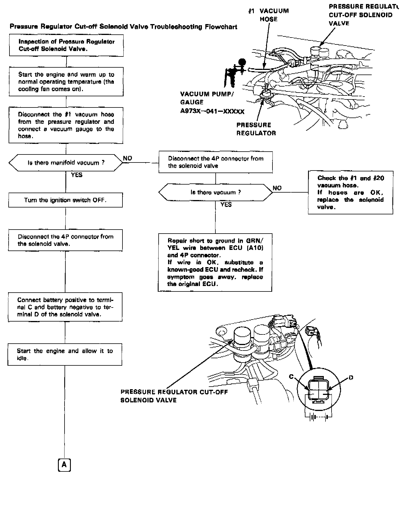
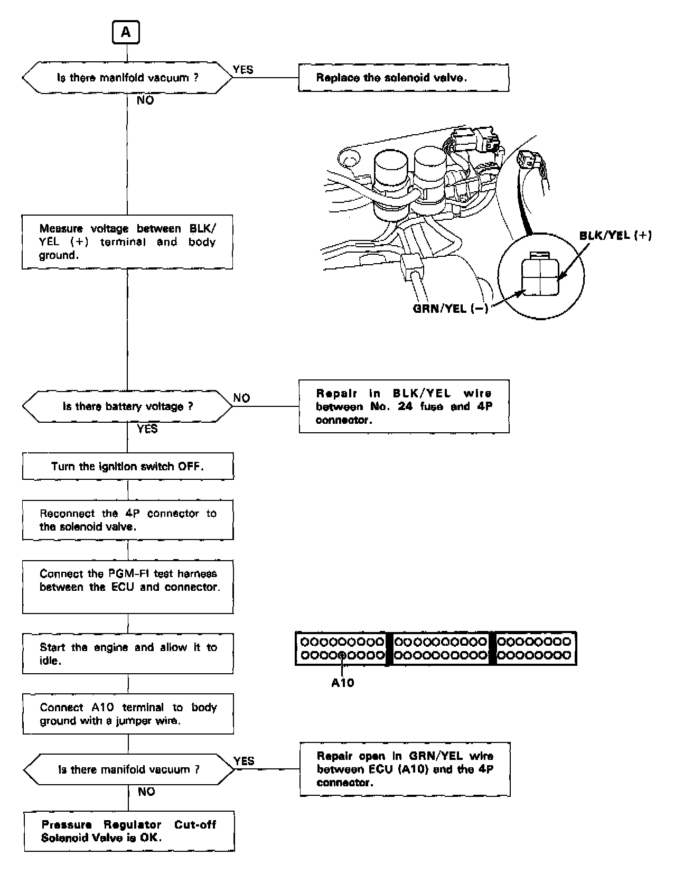

Operation CHARM
: Car repair manuals for everyone.
Home
>>
Acura
>>
1991
>>
Integra L4-1834cc 1.8L DOHC FI
>>
Repair and Diagnosis
>>
Powertrain Management
>>
Fuel Delivery and Air Induction
>>
Fuel Pressure Regulator
>>
Testing and Inspection
>>
Diagnostic Flowcharts
Diagnostic Flowcharts


FUEL PRESSURE REGULATOR FLOW CHART